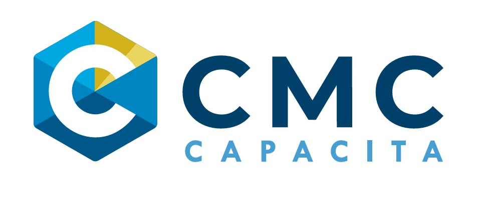

Una funcionaria llega al edificio municipal y advierte que el sistema habitual de registro no está disponible. Su jefatura se encuentra en una reunión y la jornada está por comenzar.

Audio disponible
DEMO INTERACTIVO · CMC CAPACITA
Asistencia, Puntualidad y Control Jerárquico
Cumplir la jornada, registrar correctamente y ejercer una supervisión responsable son parte del buen servicio municipal.
Registrar→Cumplir→Supervisar
MARCO FUNCIONARIO
¿Qué exige una jornada responsable?
La Ley N.º 18.883 y la normativa municipal orientan deberes vinculados con asistencia, puntualidad, cumplimiento de jornada y obediencia jerárquica.
Selecciona cada tarjeta para explorar el concepto.
Explorados: 0 de 3
DECIDE
Una mañana, tres decisiones
AUDIOVISUAL
La jornada deja registro
Los mecanismos de control —incluidos medios biométricos cuando están implementados— ayudan a respaldar objetivamente el cumplimiento de la jornada.
Ingreso
→
Registro
→
Jornada
→
Salida
→
Evidencia
00:00
Selecciona iniciar para reproducir audio y subtítulos.
CONTROL JERÁRQUICO
Supervisar también es una responsabilidad
En una unidad se observan atrasos reiterados y registros inconsistentes. La jefatura advierte el problema, pero decide no intervenir porque considera que cada funcionario debe resolverlo por sí mismo.
CIERRE
Responsabilidad en cada jornada
Tres ideas para llevar a la práctica:
01
RegistraUtiliza correctamente los mecanismos definidos por la institución.02
CumpleRespeta la jornada, horarios y deberes asociados a la función municipal.03
SupervisaLas jefaturas deben ejercer control jerárquico y actuar oportunamente.Has finalizado esta experiencia de demostración.
Buenas prácticas fortalecen la disciplina administrativa y el servicio a la comunidad.
CCSubtítulos activados.